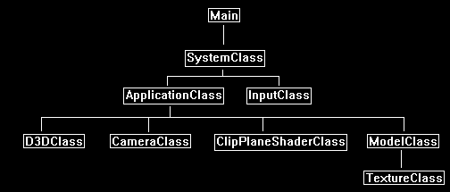
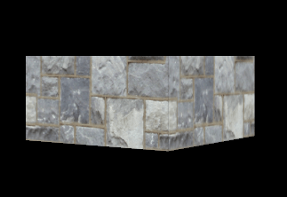

This tutorial will cover how to use clipping planes in DirectX 11 using HLSL and C++.
The code in this tutorial is based on the previous tutorials.
Clip planes are generally used to truncate geometry along a given plane in 3D space.
The most common example that most people will be familiar with is the near and far clipping planes that we setup when creating a view port.
The far plane of the view port clips any geometry that goes beyond it so that we are not drawing the entire contents of massive 3D scenes.
In this tutorial we will cover how to create a clip plane anywhere in your scene to cull any geometry that passes that plane.
Note that clip planes combined with render to texture can produce some very powerful effects that we will cover in other tutorials.
Framework
The frame work has been modified to use the new ClipPlaneShaderClass.
This class is just a slight re-write of the TextureShaderClass.

Clipplane.vs
The clip plane HLSL files are just the basic texture shaders slightly modified to handle a single clip plane.
////////////////////////////////////////////////////////////////////////////////
// Filename: clipplane.vs
////////////////////////////////////////////////////////////////////////////////
/////////////
// GLOBALS //
/////////////
cbuffer MatrixBuffer
{
matrix worldMatrix;
matrix viewMatrix;
matrix projectionMatrix;
};
We have a clip plane 4-float vector so that outside objects can set where the clip plane is located and which side of the plane will be clipped.
The first three floats specify the location of the clip plane, the fourth float indicates the position.
For example, if it holds (0.0f, 1.0f, 0.0f, -5.0f) then it means that it will clip everything beneath the Y axis and this clipping will start at the height of 5.0.
So, any pixel in the scene that is below 5.0 on the Y-axis will never be drawn.
In this tutorial we will use the value (0.0f, -1.0f, 0.0f, 0.0f) which means that anything above 0.0 on the Y axis will be culled.
cbuffer ClipPlaneBuffer
{
float4 clipPlane;
};
//////////////
// TYPEDEFS //
//////////////
struct VertexInputType
{
float4 position : POSITION;
float2 tex : TEXCOORD0;
};
struct PixelInputType
{
float4 position : SV_POSITION;
float2 tex : TEXCOORD0;
Here is the clip plane semantic that is needed as input to the pixel shader.
float clip : SV_ClipDistance0;
};
////////////////////////////////////////////////////////////////////////////////
// Vertex Shader
////////////////////////////////////////////////////////////////////////////////
PixelInputType ClipPlaneVertexShader(VertexInputType input)
{
PixelInputType output;
// Change the position vector to be 4 units for proper matrix calculations.
input.position.w = 1.0f;
// Calculate the position of the vertex against the world, view, and projection matrices.
output.position = mul(input.position, worldMatrix);
output.position = mul(output.position, viewMatrix);
output.position = mul(output.position, projectionMatrix);
// Store the texture coordinates for the pixel shader.
output.tex = input.tex;
To setup the clip plane for the pixel shader input we do a dot product of the input vertex in world space against the clip plane.
The clip plane will now be active and the pixel shader will not draw anything that this clip plane is culling.
// Set the clipping plane.
output.clip = dot(mul(input.position, worldMatrix), clipPlane);
return output;
}
Clipplane.ps
The only change in this pixel shader is to the PixelInputType structure so that it matches the one in the vertex shader.
////////////////////////////////////////////////////////////////////////////////
// Filename: clipplane.ps
////////////////////////////////////////////////////////////////////////////////
/////////////
// GLOBALS //
/////////////
Texture2D shaderTexture : register(t0);
SamplerState SampleType : register(s0);
//////////////
// TYPEDEFS //
//////////////
struct PixelInputType
{
float4 position : SV_POSITION;
float2 tex : TEXCOORD0;
float clip : SV_ClipDistance0;
};
////////////////////////////////////////////////////////////////////////////////
// Pixel Shader
////////////////////////////////////////////////////////////////////////////////
float4 ClipPlanePixelShader(PixelInputType input) : SV_TARGET
{
float4 textureColor;
// Sample the pixel color from the texture using the sampler at this texture coordinate location.
textureColor = shaderTexture.Sample(SampleType, input.tex);
return textureColor;
}
Clipplaneshaderclass.h
The ClipPlaneShaderClass is just the TextureShaderClass modified to handle clipping.
////////////////////////////////////////////////////////////////////////////////
// Filename: clipplaneshaderclass.h
////////////////////////////////////////////////////////////////////////////////
#ifndef _CLIPPLANESHADERCLASS_H_
#define _CLIPPLANESHADERCLASS_H_
//////////////
// INCLUDES //
//////////////
#include <d3d11.h>
#include <d3dcompiler.h>
#include <directxmath.h>
#include <fstream>
using namespace DirectX;
using namespace std;
////////////////////////////////////////////////////////////////////////////////
// Class name: ClipPlaneShaderClass
////////////////////////////////////////////////////////////////////////////////
class ClipPlaneShaderClass
{
private:
struct MatrixBufferType
{
XMMATRIX world;
XMMATRIX view;
XMMATRIX projection;
};
We have a new structure to match the clip plane constant buffer in the vertex shader.
struct ClipPlaneBufferType
{
XMFLOAT4 clipPlane;
};
public:
ClipPlaneShaderClass();
ClipPlaneShaderClass(const ClipPlaneShaderClass&);
~ClipPlaneShaderClass();
bool Initialize(ID3D11Device*, HWND);
void Shutdown();
bool Render(ID3D11DeviceContext*, int, XMMATRIX, XMMATRIX, XMMATRIX, ID3D11ShaderResourceView*, XMFLOAT4);
private:
bool InitializeShader(ID3D11Device*, HWND, WCHAR*, WCHAR*);
void ShutdownShader();
void OutputShaderErrorMessage(ID3D10Blob*, HWND, WCHAR*);
bool SetShaderParameters(ID3D11DeviceContext*, XMMATRIX, XMMATRIX, XMMATRIX, ID3D11ShaderResourceView*, XMFLOAT4);
void RenderShader(ID3D11DeviceContext*, int);
private:
ID3D11VertexShader* m_vertexShader;
ID3D11PixelShader* m_pixelShader;
ID3D11InputLayout* m_layout;
ID3D11Buffer* m_matrixBuffer;
ID3D11SamplerState* m_sampleState;
We have a new constant buffer for the clip plane data.
ID3D11Buffer* m_clipPlaneBuffer;
};
#endif
Clipplaneshaderclass.cpp
////////////////////////////////////////////////////////////////////////////////
// Filename: clipplaneshaderclass.cpp
////////////////////////////////////////////////////////////////////////////////
#include "clipplaneshaderclass.h"
ClipPlaneShaderClass::ClipPlaneShaderClass()
{
m_vertexShader = 0;
m_pixelShader = 0;
m_layout = 0;
m_matrixBuffer = 0;
m_sampleState = 0;
Initialize the clip plane buffer to null in the class constructor.
m_clipPlaneBuffer = 0;
}
ClipPlaneShaderClass::ClipPlaneShaderClass(const ClipPlaneShaderClass& other)
{
}
ClipPlaneShaderClass::~ClipPlaneShaderClass()
{
}
bool ClipPlaneShaderClass::Initialize(ID3D11Device* device, HWND hwnd)
{
bool result;
wchar_t vsFilename[128];
wchar_t psFilename[128];
int error;
We load the clipplane.vs and clipplane.ps HLSL shader files here.
// Set the filename of the vertex shader.
error = wcscpy_s(vsFilename, 128, L"../Engine/clipplane.vs");
if(error != 0)
{
return false;
}
// Set the filename of the pixel shader.
error = wcscpy_s(psFilename, 128, L"../Engine/clipplane.ps");
if(error != 0)
{
return false;
}
// Initialize the vertex and pixel shaders.
result = InitializeShader(device, hwnd, vsFilename, psFilename);
if(!result)
{
return false;
}
return true;
}
void ClipPlaneShaderClass::Shutdown()
{
// Shutdown the vertex and pixel shaders as well as the related objects.
ShutdownShader();
return;
}
The Render function now also takes as input a 4-float vector clip plane.
This clip plane is then set in the shader before rendering.
bool ClipPlaneShaderClass::Render(ID3D11DeviceContext* deviceContext, int indexCount, XMMATRIX worldMatrix, XMMATRIX viewMatrix,
XMMATRIX projectionMatrix, ID3D11ShaderResourceView* texture, XMFLOAT4 clipPlane)
{
bool result;
// Set the shader parameters that it will use for rendering.
result = SetShaderParameters(deviceContext, worldMatrix, viewMatrix, projectionMatrix, texture, clipPlane);
if(!result)
{
return false;
}
// Now render the prepared buffers with the shader.
RenderShader(deviceContext, indexCount);
return true;
}
bool ClipPlaneShaderClass::InitializeShader(ID3D11Device* device, HWND hwnd, WCHAR* vsFilename, WCHAR* psFilename)
{
HRESULT result;
ID3D10Blob* errorMessage;
ID3D10Blob* vertexShaderBuffer;
ID3D10Blob* pixelShaderBuffer;
D3D11_INPUT_ELEMENT_DESC polygonLayout[2];
unsigned int numElements;
D3D11_BUFFER_DESC matrixBufferDesc;
D3D11_SAMPLER_DESC samplerDesc;
D3D11_BUFFER_DESC clipPlaneBufferDesc;
// Initialize the pointers this function will use to null.
errorMessage = 0;
vertexShaderBuffer = 0;
pixelShaderBuffer = 0;
Load the clip plane vertex shader.
// Compile the vertex shader code.
result = D3DCompileFromFile(vsFilename, NULL, NULL, "ClipPlaneVertexShader", "vs_5_0", D3D10_SHADER_ENABLE_STRICTNESS, 0,
&vertexShaderBuffer, &errorMessage);
if(FAILED(result))
{
// If the shader failed to compile it should have writen something to the error message.
if(errorMessage)
{
OutputShaderErrorMessage(errorMessage, hwnd, vsFilename);
}
// If there was nothing in the error message then it simply could not find the shader file itself.
else
{
MessageBox(hwnd, vsFilename, L"Missing Shader File", MB_OK);
}
return false;
}
Load the clip plane pixel shader.
// Compile the pixel shader code.
result = D3DCompileFromFile(psFilename, NULL, NULL, "ClipPlanePixelShader", "ps_5_0", D3D10_SHADER_ENABLE_STRICTNESS, 0,
&pixelShaderBuffer, &errorMessage);
if(FAILED(result))
{
// If the shader failed to compile it should have writen something to the error message.
if(errorMessage)
{
OutputShaderErrorMessage(errorMessage, hwnd, psFilename);
}
// If there was nothing in the error message then it simply could not find the file itself.
else
{
MessageBox(hwnd, psFilename, L"Missing Shader File", MB_OK);
}
return false;
}
// Create the vertex shader from the buffer.
result = device->CreateVertexShader(vertexShaderBuffer->GetBufferPointer(), vertexShaderBuffer->GetBufferSize(), NULL, &m_vertexShader);
if(FAILED(result))
{
return false;
}
// Create the pixel shader from the buffer.
result = device->CreatePixelShader(pixelShaderBuffer->GetBufferPointer(), pixelShaderBuffer->GetBufferSize(), NULL, &m_pixelShader);
if(FAILED(result))
{
return false;
}
// Create the vertex input layout description.
polygonLayout[0].SemanticName = "POSITION";
polygonLayout[0].SemanticIndex = 0;
polygonLayout[0].Format = DXGI_FORMAT_R32G32B32_FLOAT;
polygonLayout[0].InputSlot = 0;
polygonLayout[0].AlignedByteOffset = 0;
polygonLayout[0].InputSlotClass = D3D11_INPUT_PER_VERTEX_DATA;
polygonLayout[0].InstanceDataStepRate = 0;
polygonLayout[1].SemanticName = "TEXCOORD";
polygonLayout[1].SemanticIndex = 0;
polygonLayout[1].Format = DXGI_FORMAT_R32G32_FLOAT;
polygonLayout[1].InputSlot = 0;
polygonLayout[1].AlignedByteOffset = D3D11_APPEND_ALIGNED_ELEMENT;
polygonLayout[1].InputSlotClass = D3D11_INPUT_PER_VERTEX_DATA;
polygonLayout[1].InstanceDataStepRate = 0;
// Get a count of the elements in the layout.
numElements = sizeof(polygonLayout) / sizeof(polygonLayout[0]);
// Create the vertex input layout.
result = device->CreateInputLayout(polygonLayout, numElements, vertexShaderBuffer->GetBufferPointer(),
vertexShaderBuffer->GetBufferSize(), &m_layout);
if(FAILED(result))
{
return false;
}
// Release the vertex shader buffer and pixel shader buffer since they are no longer needed.
vertexShaderBuffer->Release();
vertexShaderBuffer = 0;
pixelShaderBuffer->Release();
pixelShaderBuffer = 0;
// Setup the description of the dynamic matrix constant buffer that is in the vertex shader.
matrixBufferDesc.Usage = D3D11_USAGE_DYNAMIC;
matrixBufferDesc.ByteWidth = sizeof(MatrixBufferType);
matrixBufferDesc.BindFlags = D3D11_BIND_CONSTANT_BUFFER;
matrixBufferDesc.CPUAccessFlags = D3D11_CPU_ACCESS_WRITE;
matrixBufferDesc.MiscFlags = 0;
matrixBufferDesc.StructureByteStride = 0;
// Create the constant buffer pointer so we can access the vertex shader constant buffer from within this class.
result = device->CreateBuffer(&matrixBufferDesc, NULL, &m_matrixBuffer);
if(FAILED(result))
{
return false;
}
// Create a texture sampler state description.
samplerDesc.Filter = D3D11_FILTER_MIN_MAG_MIP_LINEAR;
samplerDesc.AddressU = D3D11_TEXTURE_ADDRESS_WRAP;
samplerDesc.AddressV = D3D11_TEXTURE_ADDRESS_WRAP;
samplerDesc.AddressW = D3D11_TEXTURE_ADDRESS_WRAP;
samplerDesc.MipLODBias = 0.0f;
samplerDesc.MaxAnisotropy = 1;
samplerDesc.ComparisonFunc = D3D11_COMPARISON_ALWAYS;
samplerDesc.BorderColor[0] = 0;
samplerDesc.BorderColor[1] = 0;
samplerDesc.BorderColor[2] = 0;
samplerDesc.BorderColor[3] = 0;
samplerDesc.MinLOD = 0;
samplerDesc.MaxLOD = D3D11_FLOAT32_MAX;
// Create the texture sampler state.
result = device->CreateSamplerState(&samplerDesc, &m_sampleState);
if(FAILED(result))
{
return false;
}
Setup the clip plane buffer.
// Setup the description of the clip plane dynamic constant buffer that is in the vertex shader.
clipPlaneBufferDesc.Usage = D3D11_USAGE_DYNAMIC;
clipPlaneBufferDesc.ByteWidth = sizeof(ClipPlaneBufferType);
clipPlaneBufferDesc.BindFlags = D3D11_BIND_CONSTANT_BUFFER;
clipPlaneBufferDesc.CPUAccessFlags = D3D11_CPU_ACCESS_WRITE;
clipPlaneBufferDesc.MiscFlags = 0;
clipPlaneBufferDesc.StructureByteStride = 0;
// Create the constant buffer pointer so we can access the vertex shader constant buffer from within this class.
result = device->CreateBuffer(&clipPlaneBufferDesc, NULL, &m_clipPlaneBuffer);
if(FAILED(result))
{
return false;
}
return true;
}
void ClipPlaneShaderClass::ShutdownShader()
{
We release the new clip plane buffer in the ShutdownShader function.
// Release the clip plane constant buffer.
if(m_clipPlaneBuffer)
{
m_clipPlaneBuffer->Release();
m_clipPlaneBuffer = 0;
}
// Release the sampler state.
if(m_sampleState)
{
m_sampleState->Release();
m_sampleState = 0;
}
// Release the matrix constant buffer.
if(m_matrixBuffer)
{
m_matrixBuffer->Release();
m_matrixBuffer = 0;
}
// Release the layout.
if(m_layout)
{
m_layout->Release();
m_layout = 0;
}
// Release the pixel shader.
if(m_pixelShader)
{
m_pixelShader->Release();
m_pixelShader = 0;
}
// Release the vertex shader.
if(m_vertexShader)
{
m_vertexShader->Release();
m_vertexShader = 0;
}
return;
}
void ClipPlaneShaderClass::OutputShaderErrorMessage(ID3D10Blob* errorMessage, HWND hwnd, WCHAR* shaderFilename)
{
char* compileErrors;
unsigned long long bufferSize, i;
ofstream fout;
// Get a pointer to the error message text buffer.
compileErrors = (char*)(errorMessage->GetBufferPointer());
// Get the length of the message.
bufferSize = errorMessage->GetBufferSize();
// Open a file to write the error message to.
fout.open("shader-error.txt");
// Write out the error message.
for(i=0; i<bufferSize; i++)
{
fout << compileErrors[i];
}
// Close the file.
fout.close();
// Release the error message.
errorMessage->Release();
errorMessage = 0;
// Pop a message up on the screen to notify the user to check the text file for compile errors.
MessageBox(hwnd, L"Error compiling shader. Check shader-error.txt for message.", shaderFilename, MB_OK);
return;
}
bool ClipPlaneShaderClass::SetShaderParameters(ID3D11DeviceContext* deviceContext, XMMATRIX worldMatrix, XMMATRIX viewMatrix,
XMMATRIX projectionMatrix, ID3D11ShaderResourceView* texture, XMFLOAT4 clipPlane)
{
HRESULT result;
D3D11_MAPPED_SUBRESOURCE mappedResource;
MatrixBufferType* dataPtr;
unsigned int bufferNumber;
ClipPlaneBufferType* dataPtr2;
// Transpose the matrices to prepare them for the shader.
worldMatrix = XMMatrixTranspose(worldMatrix);
viewMatrix = XMMatrixTranspose(viewMatrix);
projectionMatrix = XMMatrixTranspose(projectionMatrix);
// Lock the constant buffer so it can be written to.
result = deviceContext->Map(m_matrixBuffer, 0, D3D11_MAP_WRITE_DISCARD, 0, &mappedResource);
if(FAILED(result))
{
return false;
}
// Get a pointer to the data in the constant buffer.
dataPtr = (MatrixBufferType*)mappedResource.pData;
// Copy the matrices into the constant buffer.
dataPtr->world = worldMatrix;
dataPtr->view = viewMatrix;
dataPtr->projection = projectionMatrix;
// Unlock the constant buffer.
deviceContext->Unmap(m_matrixBuffer, 0);
// Set the position of the constant buffer in the vertex shader.
bufferNumber = 0;
// Finally set the constant buffer in the vertex shader with the updated values.
deviceContext->VSSetConstantBuffers(bufferNumber, 1, &m_matrixBuffer);
// Set shader texture resource in the pixel shader.
deviceContext->PSSetShaderResources(0, 1, &texture);
Here we lock the clip plane constant buffer, set the clip plane value, and then unlock the buffer again.
This will set the clip plane data inside the shader.
Also note that this is the second buffer in the vertex shader so we have to increment the bufferNumber from 0 to 1.
// Lock the clip plane constant buffer so it can be written to.
result = deviceContext->Map(m_clipPlaneBuffer, 0, D3D11_MAP_WRITE_DISCARD, 0, &mappedResource);
if(FAILED(result))
{
return false;
}
// Get a pointer to the data in the clip plane constant buffer.
dataPtr2 = (ClipPlaneBufferType*)mappedResource.pData;
// Copy the clip plane into the clip plane constant buffer.
dataPtr2->clipPlane = clipPlane;
// Unlock the buffer.
deviceContext->Unmap(m_clipPlaneBuffer, 0);
// Set the position of the clip plane constant buffer in the vertex shader.
bufferNumber = 1;
// Now set the clip plane constant buffer in the vertex shader with the updated values.
deviceContext->VSSetConstantBuffers(bufferNumber, 1, &m_clipPlaneBuffer);
return true;
}
void ClipPlaneShaderClass::RenderShader(ID3D11DeviceContext* deviceContext, int indexCount)
{
// Set the vertex input layout.
deviceContext->IASetInputLayout(m_layout);
// Set the vertex and pixel shaders that will be used to render this triangle.
deviceContext->VSSetShader(m_vertexShader, NULL, 0);
deviceContext->PSSetShader(m_pixelShader, NULL, 0);
// Set the sampler state in the pixel shader.
deviceContext->PSSetSamplers(0, 1, &m_sampleState);
// Render the geometry.
deviceContext->DrawIndexed(indexCount, 0, 0);
return;
}
Applicationclass.h
The ApplicationClass has the clipplaneshaderclass.h included and a new ClipPlaneShaderClass variable.
////////////////////////////////////////////////////////////////////////////////
// Filename: applicationclass.h
////////////////////////////////////////////////////////////////////////////////
#ifndef _APPLICATIONCLASS_H_
#define _APPLICATIONCLASS_H_
///////////////////////
// MY CLASS INCLUDES //
///////////////////////
#include "d3dclass.h"
#include "inputclass.h"
#include "cameraclass.h"
#include "modelclass.h"
#include "clipplaneshaderclass.h"
/////////////
// GLOBALS //
/////////////
const bool FULL_SCREEN = false;
const bool VSYNC_ENABLED = true;
const float SCREEN_DEPTH = 1000.0f;
const float SCREEN_NEAR = 0.3f;
////////////////////////////////////////////////////////////////////////////////
// Class name: ApplicationClass
////////////////////////////////////////////////////////////////////////////////
class ApplicationClass
{
public:
ApplicationClass();
ApplicationClass(const ApplicationClass&);
~ApplicationClass();
bool Initialize(int, int, HWND);
void Shutdown();
bool Frame(InputClass*);
private:
bool Render(float);
private:
D3DClass* m_Direct3D;
CameraClass* m_Camera;
ModelClass* m_Model;
ClipPlaneShaderClass* m_ClipPlaneShader;
};
#endif
Applicationclass.cpp
////////////////////////////////////////////////////////////////////////////////
// Filename: applicationclass.cpp
////////////////////////////////////////////////////////////////////////////////
#include "applicationclass.h"
ApplicationClass::ApplicationClass()
{
m_Direct3D = 0;
m_Camera = 0;
m_Model = 0;
Initialize the new clip plane shader object pointer to null in the class constructor.
m_ClipPlaneShader = 0;
}
ApplicationClass::ApplicationClass(const ApplicationClass& other)
{
}
ApplicationClass::~ApplicationClass()
{
}
bool ApplicationClass::Initialize(int screenWidth, int screenHeight, HWND hwnd)
{
char modelFilename[128], textureFilename[128];
bool result;
// Create and initialize the Direct3D object.
m_Direct3D = new D3DClass;
result = m_Direct3D->Initialize(screenWidth, screenHeight, VSYNC_ENABLED, hwnd, FULL_SCREEN, SCREEN_DEPTH, SCREEN_NEAR);
if(!result)
{
MessageBox(hwnd, L"Could not initialize Direct3D", L"Error", MB_OK);
return false;
}
// Create and initialize the camera object.
m_Camera = new CameraClass;
m_Camera->SetPosition(0.0f, 0.0f, -10.0f);
m_Camera->Render();
// Set the file name of the model.
strcpy_s(modelFilename, "../Engine/data/cube.txt");
// Set the file name of the texture.
strcpy_s(textureFilename, "../Engine/data/stone01.tga");
// Create and initialize the model object.
m_Model = new ModelClass;
result = m_Model->Initialize(m_Direct3D->GetDevice(), m_Direct3D->GetDeviceContext(), modelFilename, textureFilename);
if(!result)
{
MessageBox(hwnd, L"Could not initialize the model object.", L"Error", MB_OK);
return false;
}
The new ClipPlaneShaderClass object is created here.
// Create and initialize the clip plane shader object.
m_ClipPlaneShader = new ClipPlaneShaderClass;
result = m_ClipPlaneShader->Initialize(m_Direct3D->GetDevice(), hwnd);
if(!result)
{
MessageBox(hwnd, L"Could not initialize the clip plane shader object.", L"Error", MB_OK);
return false;
}
return true;
}
void ApplicationClass::Shutdown()
{
We release the new ClipPlaneShaderClass object here.
// Release the clip plane shader object.
if(m_ClipPlaneShader)
{
m_ClipPlaneShader->Shutdown();
delete m_ClipPlaneShader;
m_ClipPlaneShader = 0;
}
// Release the model object.
if(m_Model)
{
m_Model->Shutdown();
delete m_Model;
m_Model = 0;
}
// Release the camera object.
if(m_Camera)
{
delete m_Camera;
m_Camera = 0;
}
// Release the Direct3D object.
if(m_Direct3D)
{
m_Direct3D->Shutdown();
delete m_Direct3D;
m_Direct3D = 0;
}
return;
}
bool ApplicationClass::Frame(InputClass* Input)
{
static float rotation = 0.0f;
bool result;
// Check if the user pressed escape and wants to exit the application.
if(Input->IsEscapePressed())
{
return false;
}
// Update the rotation variable each frame.
rotation -= 0.0174532925f * 0.25f;
if(rotation < 0.0f)
{
rotation += 360.0f;
}
// Render the graphics scene.
result = Render(rotation);
if(!result)
{
return false;
}
return true;
}
bool ApplicationClass::Render(float rotation)
{
XMMATRIX worldMatrix, viewMatrix, projectionMatrix;
XMFLOAT4 clipPlane;
bool result;
Create a clip plane first.
This clip plane will truncate anything below 0.0 on the Y axis.
// Setup a clipping plane.
clipPlane = XMFLOAT4(0.0f, -1.0f, 0.0f, 0.0f);
// Clear the buffers to begin the scene.
m_Direct3D->BeginScene(0.0f, 0.0f, 0.0f, 1.0f);
// Get the world, view, and projection matrices from the camera and d3d objects.
m_Direct3D->GetWorldMatrix(worldMatrix);
m_Camera->GetViewMatrix(viewMatrix);
m_Direct3D->GetProjectionMatrix(projectionMatrix);
// Rotate the world matrix by the rotation value so that the cube will spin.
worldMatrix = XMMatrixRotationY(rotation);
Now draw the spinning cube using the clip plane shader.
It should now cut off the top half of the cube.
// Render the model using the clip plane shader.
m_Model->Render(m_Direct3D->GetDeviceContext());
result = m_ClipPlaneShader->Render(m_Direct3D->GetDeviceContext(), m_Model->GetIndexCount(), worldMatrix, viewMatrix, projectionMatrix,
m_Model->GetTexture(), clipPlane);
if(!result)
{
return false;
}
// Present the rendered scene to the screen.
m_Direct3D->EndScene();
return true;
}
Summary
We now have a modified texture shader that will cull pixels based on clip planes that we've created.

To Do Exercises
1. Recompile the code and you should get a spinning cube cut in half on the Y axis. Press escape to quit.
2. Load the sphere model instead of the cube model.
3. Change the clip plane to cull different parts of the model on different heights and different planes.
Source Code
Source Code and Data Files: dx11win10tut27_src.zip